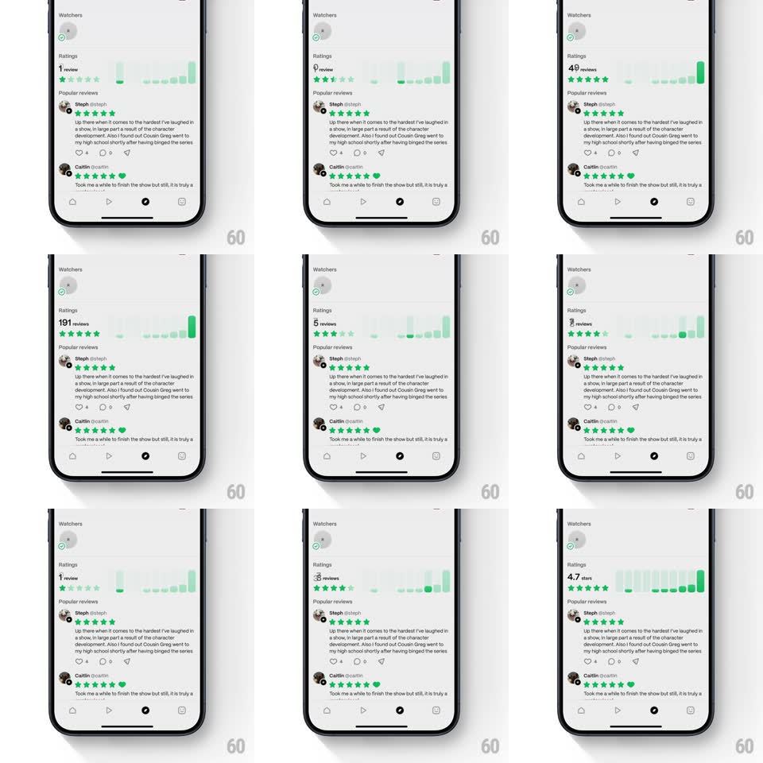

Media
Frame-by-frame

Rebuild this interaction 1:1: Marathon's ratings scrubber - on a show's ratings section, pressing and scrubbing horizontally across the green distribution bar chart highlights the bar under your finger and live-updates the headline count and star row to that rating's review total ("191 reviews" at 5 stars, "1 review" at 1 star).

Rebuild this interaction 1:1: Marathon's ratings scrubber - on a show's ratings section, pressing and scrubbing horizontally across the green distribution bar chart highlights the bar under your finger and live-updates the headline count and star row to that rating's review total ("191 reviews" at 5 stars, "1 review" at 1 star).
## Integration
Integration: stack-agnostic spec - springs given as stiffness/damping, timed motions as duration + curve; map every value to your framework and animation library of choice.
## Scene
Show detail sheet: Watchers row, then Ratings - a large count ("4.7 stars" at rest) with a green 5-star row and a vertical bar chart of the ratings distribution (rounded green bars), then Popular reviews below.
## Motion spec
Pattern: scrub-able bar chart.
- Press on the chart: the touched bar lights full-strength green and lifts (scaleY from its base +8%, 150ms) while the others dim to 25%.
- Scrub: the highlight follows the finger bar-to-bar (instant retarget, 100ms crossfade); the headline count rolls to that bar's review total (digits slide vertically, 150ms) and the star row fills to that bar's star level (stars fill/empty left-to-right, 120ms stagger).
- Bars bounce subtly as the highlight lands (scaleY overshoot, spring ~400/22, 250ms).
- Release: the chart springs back to the resting state - overall average count and full-strength bars (300ms ease-out).
## Calibration
- Count, stars, and highlight all derive from the touched bar - one source of truth.
- Bar highlight scales from the base, never from center - bars grow upward.
## Reduced motion
Highlight switches without bounce; count changes without digit roll.
## Don't miss
- The resting headline is the weighted average with one decimal ("4.7") - scrubbing replaces it with raw per-star counts.
- Bars are rounded-top pills with generous gaps - not a dense histogram.